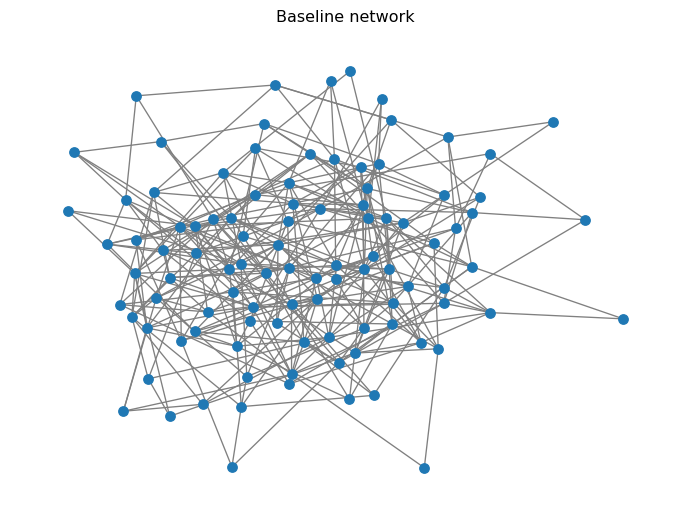

import networkx as nx
import numpy as np
import matplotlib.pyplot as pltSIS Model on Networks
Module 5: Complex Networks
Reading
- Compulsory: (pastor2001epidemic?).
- Recommended: Pastor-Satorras et al. (2015); (newman2002spread?).
In Module 1 you wrote the SIS model as an ODE for a well-mixed population. Here every individual is a node, and infection travels only along edges (Keeling and Rohani 2008; Pastor-Satorras et al. 2015). You will implement SIS on networks with NetworkX and measure how network structure (random, small-world, scale-free) changes the spread.
Core activity
Implement the discrete-time SIS model on a network, validate it, and compare the mean infected fraction on random, small-world and scale-free graphs. This page sets up the model and the graphs. SIS Initial State stores the node states, SIS Simulation implements the update and Comparing Networks under SIS runs the comparison.
What is the SIS Model?
- States: each node is Susceptible (S) or Infected (I).
- Transitions:
- \(S \to I\): infection through contacts (controlled by \(\beta\)).
- \(I \to S\): recovery (controlled by \(\mu\)).
- No permanent immunity: recovered nodes can be reinfected.
Discrete-Time Update Rule
You simulate in discrete time steps \(t = 0, 1, 2, \dots\).
A susceptible node with \(m\) infected neighbors becomes infected with probability (Keeling and Rohani 2008):
\[ \mathbb{P}(S \to I) = 1 - (1 - \beta)^m. \]
Why \(1 - (1-\beta)^m\)?
If each infected neighbor independently infects you with probability \(\beta\), then the probability you avoid infection from all \(m\) neighbors is \((1-\beta)^m\). So the probability of at least one successful infection is \(1-(1-\beta)^m\).
On the other hand, if a node is infected, it recovers with probability:
\[ \mathbb{P}(I \to S) = \mu. \]
Prediction
You will compare random (Erdős-Rényi), small-world (Watts-Strogatz) and scale-free (Barabási-Albert) graphs. Try sizes such as \(N \in \{50, 100, 300\}\), run 10 to 30 repetitions for each case and plot the average infected fraction over time.
Exercise
Answer these questions before you write any code:
- Take a random graph and a scale-free graph with the same \(N\) and the same mean degree. With the same \((\beta, \mu)\), which one do you expect to sustain more infection?
- What should happen to the infected fraction when \(\beta = 0\)?
Solution
- The scale-free graph. Its hubs have many neighbours, so they are infected early and often, and each infected hub exposes many susceptible nodes. In the language of Epidemic Threshold, its larger \(\langle k^2 \rangle\) lowers the threshold.
- Nobody can be infected, so the infected nodes only recover. Each one stays infected with probability \(1 - \mu\) per step, and the expected number of infected nodes decays as \(I(0)(1-\mu)^t\). You will use this case to validate your code.
Imports and Parameters
These are the parameters you can tune:
SEED = 7
# Model parameters
beta = 0.20 # infection probability per infected neighbor (per step)
mu = 0.10 # recovery probability (per step)
# Simulation parameters
steps = 120 # number of time steps to simulate
initial_infected = 5 # should always be < N
N = 100 # number of nodes in the graph
About
SEED (why you fix it)
There are two sources of randomness in this activity:
- the graph you generate (e.g., which edges appear in Erdős-Rényi), and
- the stochastic SIS dynamics (who gets infected / recovers at each step).
You fix SEED so results are reproducible: rerunning the page gives the same plots, which makes debugging and reporting possible.
When you run many repetitions, you use SEED + r so repetition r is a different random trial (new graph + new random infection events) but still reproducible. If you reused the same SEED in every repetition, you would repeat the same realization and your “average over runs” would be meaningless.
Choose a Network
You will compare several models. Start by picking one. The three models are described in Erdős-Rényi Random Graphs, Small-World Networks and Preferential Attachment.
Example of Baseline Graph
G = nx.erdos_renyi_graph(n=N, p=0.08, seed=SEED)
# where p is the probability of edge creationTo make the comparison fair, all three graphs should have about the same mean degree, here \(\langle k \rangle \approx 6\).
Exercise
Implement a helper function make_graph(<model>, <n>), where <model> is a string specifying the type of graph (“random”, “small-world” or “scale-free”) and <n> is the number of nodes. Choose the parameters so that the mean degree is close to 6.
def make_graph(model: str, n: int, seed: int = SEED):
"""Create a graph model with mean degree close to 6: 'random', 'small-world', or 'scale-free'."""
# TODO
return G
Solution
The mean degree is \((n-1)p\) for \(G(n, p)\), \(k\) for Watts-Strogatz and about \(2m\) for Barabási-Albert.
def make_graph(model: str, n: int, seed: int = SEED):
if model == "random":
return nx.erdos_renyi_graph(n=n, p=6 / (n - 1), seed=seed)
if model == "small-world":
return nx.watts_strogatz_graph(n=n, k=6, p=0.08, seed=seed)
if model == "scale-free":
return nx.barabasi_albert_graph(n=n, m=3, seed=seed)
raise ValueError("model must be one of: 'random', 'small-world', 'scale-free'")Now you can easily create different graph types:
G = make_graph("random", n=100)
print("N, E =", G.number_of_nodes(), G.number_of_edges())N, E = 100 317Optional quick visualization:
pos = nx.spring_layout(G)
nx.draw(G, pos=pos, node_size=50, edge_color="gray")
plt.title("Baseline network")
plt.show()
What’s Next?
References
Keeling, Matt J., and Pejman Rohani. 2008. Modeling Infectious Diseases in Humans and Animals. Princeton University Press.
Pastor-Satorras, Romualdo, Claudio Castellano, Piet Van Mieghem, and Alessandro Vespignani. 2015. “Epidemic Processes in Complex Networks.” Reviews of Modern Physics 87 (3): 925–79. https://doi.org/10.1103/RevModPhys.87.925.